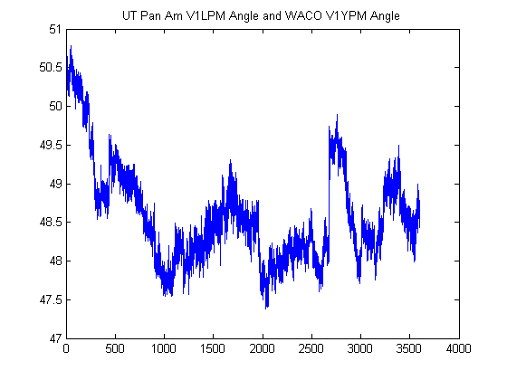

Contents
clear all; close all; clc;
USER INPUTS ENTERED HERE %%%%%%%%%%%%%%%%%%%%%%%%%%%%%%%%%%%%%%%%%%%%%%
fileName = '120103,010000000,UT,Austin,3378,Phasor.csv';
hr = fileName(8:9);
date = fileName(1:6);
[timeStamp, stationTitle, stationData, angle_diff_title, angle_difference] = fReadPMUFile(fileName, 1);
dt = timeStamp(2) - timeStamp(1);
window_size = 10;
window_rng = (1/dt)*window_size;
stp = window_rng/2;
if_freq = 0;
freq_station = [1,2];
angle_station =[1,3,4];
Measurement_point =
6
Messurement_sample =
108000
CSV_Format_type =
'type2'
Number_error_data =
0
Number_true_data =
18


START OF ANALYSIS
if if_freq
st = freq_station;
else
st = angle_station;
end
for bb = 1:length(st)
if if_freq==1
sig = 3;
signal = stationData(:,sig,freq_station(bb)); signal_title = [stationTitle{freq_station(bb)*sig,:}, ' station ',num2str(freq_station(bb))];
signal_avg = mean(signal(signal~=0));
pt_drop = find(signal==0);
if ~isempty(pt_drop)
figure; plot(signal), title('before')
signal(pt_drop) = signal_avg;
figure; plot(signal),title('after')
end
else
signal = angle_difference(:,angle_station(bb)); sig = 3;
signal_title = [angle_diff_title{angle_station(bb),:}, 'angle pair ',num2str(angle_station(bb))];
freq_drop_detect = stationData(:,sig,freq_station(1));
signal_avg = mean(signal(freq_drop_detect~=0));
pt_drop = find(freq_drop_detect==0);
if length(freq_station)>1
freq_drop_detect2 = stationData(:,sig,freq_station(2));
signal_avg2 = mean(signal(freq_drop_detect2~=0));
pt_drop2 = find(freq_drop_detect2==0);
else
pt_drop2 = [];
end
if ~isempty(pt_drop)
figure; plot(signal), title('before')
signal(pt_drop) = signal_avg;
figure; plot(signal),title('after')
elseif ~isempty(pt_drop2)
figure; plot(signal), title('before')
signal(pt_drop2) = signal_avg2;
figure; plot(signal),title('after')
end
end
hfig = figure;
plot(timeStamp,signal)
title(signal_title)
if if_freq
sta = freq_station(bb);
typ = 'freq';
else
sta = angle_station(bb);
typ = 'ang';
end
fig_title = ['hr_',num2str(hr),'_signal_',num2str(sta),'_type_',typ];
saveas(hfig,fig_title)
n = 1; n_1p8Hz = 1;
for qt = 1:stp:length(signal)-window_rng
y = signal(qt:qt+window_rng-1);
N = length(y);
std_save(n) = std(detrend(y));
mean_save(n) = mean(detrend(y));
var_save(n) = var(y);
min_save(n) = min(y);
max_save(n) = max(y);
diff_save(n) = max(y) - min(y);
diff_y = diff(y);
[maxtab, mintab] = fpeakdet(diff_y, 0.001);
if ~isempty(maxtab)
diff_y_save(n) = max(maxtab(:,2));
else
diff_y_save(n) = NaN;
end
L = length(y)/2;
[amp, theta, freq, alpha_percent, y_hat] = fMatrixPencil(detrend(y)', L, dt, 10e-2);
A_matrixpencil =sortrows([amp, theta, freq, alpha_percent],1);
pt = find(A_matrixpencil(:,3)<=0);
A_matrixpencil(pt,:) = [];
[a,b] = size(A_matrixpencil);
if a>=2
amp_pencil(:,n) = A_matrixpencil(end-1:end,1);
freq_pencil(:,n) = A_matrixpencil(end-1:end,3);
theta_pencil(:,n) = A_matrixpencil(end-1:end,2);
alpha_percent_pencil(:,n) = A_matrixpencil(end-1:end,4);
else
amp_pencil(:,n) = [0;0];
freq_pencil(:,n) = [0;0];
theta_pencil(:,n) = [0;0];
alpha_percent_pencil(:,n) = [0;0];
end
Fs = 1/dt;
T = dt;
L = length(diff(y));
t = (0:L-1)*T;
NFFT = 2^nextpow2(L);
Y = fft(diff(y),NFFT)/L;
f = Fs/2*linspace(0,1,NFFT/2+1);
pt_f2 = find(f<2);
Y_temp2 = 2*abs(Y(1:NFFT/2+1));
Y_save2(:,n) = Y_temp2(pt_f2);
Ymax_save2(1,n) = max(Y_save2(:,n));
pt_f = find(f<1.2);
Y_temp = 2*abs(Y(1:NFFT/2+1));
Y_save(:,n) = Y_temp(pt_f);
Ymax_save(1,n) = max(Y_save(:,n));
[Pyy,fy] = pyulear(detrend(y),128,4096,30);
pty = find(fy<2);
tfreqy(:,n) = mag2db(Pyy(pty));
pyy_save(:,n) = tfreqy(pty,n);
pyymax_save(1,n) = max(pyy_save(:,n));
[maxtab, mintab] = fpeakdet(pyy_save(:,n), 8);
if ~isempty(maxtab)
fpyymaxtab_save{1,n} = fy(maxtab(:,1));
pyymaxtab_save{1,n} = pyy_save(maxtab(:,1),n);
else
fpyymaxtab_save{1,n} = 0;
pyymaxtab_save{1,n} = 0;
end
pty2 = find(fy<2.5);
tfreqy2(:,n) = mag2db(Pyy(pty2));
pyy_save2(:,n) = tfreqy2(pty2,n);
pyymax_save2(1,n) = max(pyy_save2(:,n));
fpyymax_save2(1,n) = fy(pyy_save2(:,n)==pyymax_save2(1,n));
if pyymax_save2(1,n) > -120
f_1p8Hz(1,n_1p8Hz) = fpyymax_save2(1,n);
pyy_1p8Hz(1,n_1p8Hz) = pyymax_save2(1,n);
t_1p8Hz(1,n_1p8Hz) = qt;
n_1p8Hz = n_1p8Hz + 1;
end
pt_1p8 = find(fy>=1.69&fy<=2.0);
f_1p9Hz_temp = fy(pt_1p8);
pyy_1p8Hz_temp = mag2db(Pyy(pt_1p8));
pyy_1p8Hz_save(1,n) = max(pyy_1p8Hz_temp);
f_1p8Hz_save(1,n) = f_1p9Hz_temp(pyy_1p8Hz_temp==pyy_1p8Hz_save(1,n));
n = n + 1;
end
Begin Plotting Data and Further Analysis
t = timeStamp(window_rng:stp:length(signal)-stp);
std_cuttoff = 3;
[a,b] = size(tfreqy);
yw_plot{bb,:,:,:} = {0:5:(b-1)*5,fy(pty),tfreqy};
if_diff = 0;
if_plot = 0; sigt = 'events marked for yule-walker results'; y_sig = 'dB';
[pt_event_yulewalker] = fPlotandAnalysis(timeStamp,signal,t,pyymax_save,std_cuttoff,if_diff,if_plot,sigt);
if_diff = 0;
if_plot = 0; sigt = 'events marked for yule-walker results including freq over 1.2 hz'; y_sig = 'dB';
[pt_event_yulewalker2] = fPlotandAnalysis(timeStamp,signal,t,pyymax_save2,std_cuttoff,if_diff,if_plot,sigt);
if_diff = 0;
if_plot = 0; sigt = 'events marked for fft results'; y_sig = 'amplitude, deg';
[pt_event_fft] = fPlotandAnalysis(timeStamp,signal,t,Ymax_save,3.5,if_diff,if_plot,sigt);
if_diff = 0;
if_plot = 0; sigt = 'events marked for fft results including freq above 1.2 hz'; y_sig = 'amplitude, deg';
[pt_event_fft2] = fPlotandAnalysis(timeStamp,signal,t,Ymax_save2,3.5,if_diff,if_plot,sigt);
if_diff = 0;
if_plot = 0; sigt = 'events marked for max-min results'; y_sig = 'amplitude, deg';
[pt_event_diff] = fPlotandAnalysis(timeStamp,signal,t,diff_save,std_cuttoff,if_diff,if_plot,sigt);
if_diff = 0;
if_plot = 0; sigt = 'events marked for matrix pencil'; y_sig = 'amplitude, deg';
[pt_event_matrixpencil] = fPlotandAnalysis(timeStamp,signal,t,amp_pencil(2,:),std_cuttoff,if_diff,if_plot,sigt);
if_diff = 0;
if_plot = 0; sigt = 'events marked for matrix pencil 2nd highest'; y_sig = 'amplitude, deg';
[pt_event_matrixpencil2] = fPlotandAnalysis(timeStamp,signal,t,amp_pencil(1,:),std_cuttoff,if_diff,if_plot,sigt);
if_diff = 0;
if_plot = 0; sigt = 'events marked for diff function'; y_sig = 'amplitude, deg';
pt_nan = find(isnan(diff_y_save)==1);
if isempty(pt_nan)
[pt_event_diff_y] = fPlotandAnalysis(timeStamp,signal,t,diff_y_save,std_cuttoff,if_diff,if_plot,sigt);
else
[pt_event_diff_y] = fPlotandAnalysis_nan(timeStamp,signal,t,diff_y_save,std_cuttoff,if_diff,if_plot,sigt);
end
t_yw = []; x_yw = []; t_fft = []; x_fft = []; t_diffy = []; x_diffy = [];
t_diff = []; x_diff = []; t_mp = []; x_mp = []; t_mp2 = []; x_mp2 = [];
t_events = [];
t_yw = t(pt_event_yulewalker); x_yw = 1.1*ones(length(pt_event_yulewalker),1);
t_fft = t(pt_event_fft); x_fft = 1.2*ones(length(pt_event_fft),1);
t_diff = t(pt_event_diff); x_diff = 1.3*ones(length(pt_event_diff),1);
t_mp = t(pt_event_matrixpencil); x_mp = 1.4*ones(length(pt_event_matrixpencil),1);
t_mp2 = t(pt_event_matrixpencil2); x_mp2 = 1.5*ones(length(pt_event_matrixpencil2),1);
t_diffy = t(pt_event_diff_y); x_diffy = 1.0*ones(length(pt_event_diff_y),1);
if ~isempty(t_yw)
t_events(:,1) = t_yw;
t_events(:,2) = ones(length(t_yw),1);
[t_events] = fEventCount(t_events, t_diff);
[t_events] = fEventCount(t_events, t_diffy);
[t_events] = fEventCount(t_events, t_mp);
elseif ~isempty(t_diff)
t_events(:,1) = t_diff;
t_events(:,2) = ones(length(t_diff),1);
[t_events] = fEventCount(t_events, t_diffy);
[t_events] = fEventCount(t_events, t_mp);
elseif ~isempty(t_diffy)
t_events(:,1) = t_diffy;
t_events(:,2) = ones(length(t_diffy),1);
[t_events] = fEventCount(t_events, t_mp);
else
t_events(:,1) = t_mp;
t_events(:,2) = ones(length(t_mp),1);
end
t_events = sortrows(t_events,1);
x_events = 1.6*ones(length(t_events(:,1)),1);
pt_fndevent = find(t_events(:,2)>1);
leg = {};
if ~isempty(x_yw)
leg = {'yule walker'};
end
if ~isempty(x_fft)
leg = {leg{:}, 'fft'};
end
if ~isempty(x_diff)
leg = {leg{:}, 'min-max'};
end
if ~isempty(x_diffy)
leg = {leg{:}, 'diff'};
end
if ~isempty(x_mp)
leg = {leg{:}, 'matrix pencil'};
end
if ~isempty(x_mp2)
leg = {leg{:}, 'matrix pencil 2'};
end
if ~isempty(pt_fndevent)
leg = {leg{:}, 'Total Events'};
end
hfig = figure;
plot(t_yw,x_yw,'go',t_fft, x_fft,'ko',t_diff,x_diff,'bo',t_diffy,x_diffy,'rd',t_mp,x_mp,'ro',t_mp2,x_mp2,'mo',t_events(pt_fndevent,1),x_events(pt_fndevent),'rx')
h = legend([]);
set(h,'String',leg)
if if_freq
sta = st(bb);
else
sta = angle_station(bb);
end
title(['all detected events from four methods for signal number ',num2str(sta)]),grid,axis([0 4000 0 2.5])
fig_title = ['summar_hr_',num2str(hr),'_signal_',num2str(sta),'_type_',typ];
saveas(hfig,fig_title)
save_found_events_time{:,bb} = t_events(pt_fndevent,1);
if if_freq
fig_title = ['freq_st_'];
if freq_station<10
fig_title = ['freq_st_0',num2str(freq_station(bb)),'_hr_',num2str(hr)];
else
fig_title = ['freq_st_',num2str(freq_station(bb)),'_hr_',num2str(hr)];
end
else
fig_title = ['ang_'];
if angle_station(bb)<10
fig_title = [fig_title, '0',num2str(angle_station(bb)),'_hr_',num2str(hr)];
else
fig_title = [fig_title, num2str(angle_station(bb)),'_hr_',num2str(hr)];
end
end
fig_title = ['event_summary_', date, '_', fig_title ,'.fig'];
for qt = 1:length(pt_fndevent)
t_event = t_events(pt_fndevent(qt),1);
end_pt = find(t_event==timeStamp);
if end_pt-15*30 < 0
xEvent = signal(end_pt-10*30+1:end_pt+5*30);
tEvent = timeStamp(end_pt-10*30+1:end_pt+5*30);
elseif end_pt-15*30 == 0
xEvent = signal(end_pt-15*30+1:end_pt+5*30);
tEvent = timeStamp(end_pt-15*30+1:end_pt+5*30);
else
xEvent = signal(end_pt-15*30:end_pt+5*30);
tEvent = timeStamp(end_pt-15*30:end_pt+5*30);
end
figure;
hfig = plot(tEvent,xEvent,'LineWidth',2), title([' Event no. ',num2str(qt), ' for ', signal_title, ' date ', num2str(date), ' hr ', num2str(hr)]);
xlabel('time, \itseconds'), axis tight
grid
if if_freq
fig_title = ['freq_st_'];
if freq_station<10
fig_title = ['freq_st_0',num2str(freq_station(bb)),'_hr_',num2str(hr),'_event_'];
else
fig_title = ['freq_st_',num2str(freq_station(bb)),'_hr_',num2str(hr),'_event_'];
end
else
fig_title = ['ang_'];
if angle_station(bb)<10
fig_title = [fig_title, '0',num2str(angle_station(bb)),'_hr_',num2str(hr),'_event_'];
else
fig_title = [fig_title, num2str(angle_station(bb)),'_hr_',num2str(hr),'_event_'];
end
end
if qt<10
fig_title = [date, '_', fig_title,'0',num2str(qt),'.fig'];
else
fig_title = [date, '_', fig_title,num2str(qt),'.fig'];
end
saveas(hfig,fig_title)
end
hfig =
6.5090e+003


hfig =
7.1200e+003
hfig =
7.2970e+003
hfig =
7.4740e+003
hfig =
7.6510e+003
hfig =
7.8280e+003

hfig =
8.4470e+003


end
N = length(yw_plot);
figure;
for qt = 1:N
if N == 6
subplot(3,2,qt)
else
subplot(N,1,qt)
end
x = cell2mat(yw_plot{qt}(1));
y = cell2mat(yw_plot{qt}(2));
z = cell2mat(yw_plot{qt}(3));
contour(x,y,z)
xlabel('time,\itseconds'), ylabel('frequency, \itHz')
if if_freq==0
title(angle_diff_title{angle_station(qt),:})
else
title(stationTitle{freq_station(qt)*sig,:})
end
colormap jet
colorbar('location','EastOutside')
end
hfig = figure;
[a,b] = size(save_found_events_time); n = 1;
for ii = 1:b
x_events = ones(length(save_found_events_time{ii}))*n;
plot(save_found_events_time{ii},x_events,'x','MarkerSize',10)
hold on
n = n + 1;
end
axis([0 3600 0 b+1]), grid
title(['hr_',hr,'_summary for all events'])
hold off
fig_title = ['hr_',num2str(hr),'_type_',typ,' for all signals'];
saveas(hfig,fig_title)
if if_freq
clr = {'b','r','k','c'};
n = 0;
hfig = figure;
for ii = 1:length(freq_station)
plot(timeStamp, stationData(:,3,freq_station(ii)),clr{ii})
hold on
x_events = ones(length(save_found_events_time{ii}))*mean(stationData(:,3,freq_station(ii)));
plot(save_found_events_time{ii},x_events,'x','MarkerSize',10)
n = n + 0.05;
end
axis([0 3600 59.95 60.05])
fig_title = ['hr_',num2str(hr),'_type_',typ,' signals']
saveas(hfig,fig_title)
else
clr = {'b','r','k','c','b','r','k','c','b','r','k','c'};
n = 0;
hfig = figure;
for ii = 1:length(angle_station)
plot(timeStamp, angle_difference(:,angle_station(ii)),clr{ii})
hold on
x_events = ones(length(save_found_events_time{ii}))*mean(angle_difference(:,angle_station(ii)));
plot(save_found_events_time{ii},x_events,'x','MarkerSize',10)
n = n + 0.05;
end
fig_title = ['hr_',num2str(hr),'_type_',typ,' signals']
saveas(hfig,fig_title)
end
fig_title =
hr_01_type_ang signals